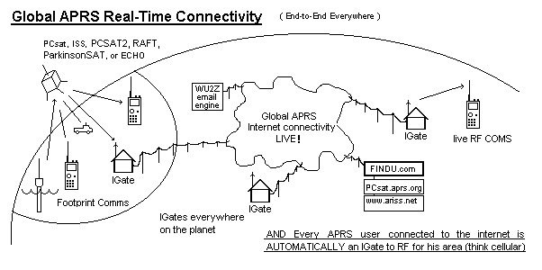

PSAT - Prior 2008 and 2010 designs
US Naval Academy Satellite Lab,
Bob Bruninga, WB4APR
Midns Odowd, Colby, Elward, Bell(14)
Midns Carlos, Gutierrez, Toombs(13)
Midns Crawford, Lumsden, Guilfoyle, Randall, Ridge, Pollock, Schlottmann (09)
Midns Icard, Edirisinghe, Mayer, Papso, Phillips (08)
Midns Campbell, Dendinger, Lewis, Lindsay, Londono, Mayer, Okun (07)
Midns Paquette, Robeson, Koeppel, Piggrem, Lovick & Vandegriff (06)
Midn Edwards, Oceanography (05) and Midn Humberd, EE (04)
PSAT was an annual design project for US Naval Academy Aerospace students. While waiting for a launch, the design evolved singnificantly with each new academic year. The final design shown at right was begun in earnest in the Fall of 2014, delivered in January 2015 and launched 20 May 2015.
This page contains all the historical evolution of the design that is not relevant to the final spacecraft.
PSAT is another APRS satellite that can digipeat user packets just like the original PCSAT (NO44) and the packet system on the ISS. PSAT also supports the same digipeating alias of ARISS so that users do not have to change any parameters when using any of these three APRS transponders. If users want to target only a single satellite, they can use the actual spacecraft callsign. PSAT for PSAT, RS0ISS for the ISS, and W3ADO-1 for PCSAT.
CUBESAT MODEL: Back in 2008, we re-designed the original 1 cubic foot ParkinsonSAT shown above to fit inside the a 1.5 unit cubesat so that two Psats could be launched from the same P-Pod launcher. That design used four deployable solar arrays in a sunflower configuration and pointed towards the sun with a 3 axis ADCS. Half of the 1.5 unit Psat was available for auxilliary payloads or experiments such as the Brno University PSK31 experiment. The final 2014 design remains a 1.5U cubesat but with higher efficiency solar cells, we no longer need the deployable side petal panels and can operate with fixed side panels.
Global Experimental Data Channel: PSAT is the space segment of this initiative to encourage both new satellite construction in support of this experimental data channel and lower cost buoy and sensor experimentation at other schools as shown below. Today, the only AMSAT that is available for no cost to schools with such experiments are the Naval Academy's PCSATs. But with ParkinsonSAT we hope to commence an ongoing full time presence in space to continue this support of the 145.825 data uplink channel for future experiments. To this end we hope other schools to either build additional 145.825 MHz relay satellites and/or to build experimental sensors. The complete comms system including data transponder fits on one 3.4 inch square card shown here. We hope that ParkinsonSAT will be the Egg in this chicken-egg conundrum.
Old 2010 PSAT Design Details: The following old links detail the 2008 cubesat design. THey are all obsolete and will be updated as time permits.
CUBESAT DEPLOYMENT: The two 2008 cubesat designs would come out of the P-POD launcher upside down so that the deployment of the panels is not a violent event. The arrays only begin to deploy in the last few percent of travel, and then they are constrained by the p-pod opening. At this point, the forces of the deploying panels tend to add to the acceleration of the cubesat and assure the separation from the launcher as shown below.
BACKGROUND: The Naval Academy's PCsat , PCSAT2 , ANDE and RAFT satellites launched in 2001, 2005 and 2006 provided links back to the APRS internet system from simple student projects anywhere in the world. These satellites can relay position/status and telemetry about 2 to 4 times a day back to shoreside observers as a small part of the overall APRS system used by 10's of thousands of terrestrial users and vehicles.

2008 DESIGN DOCUMENTATION: . The following section provides on-line links to all of the PSAT design documentation. In Summer 2008, a significant design change is being considered in re-packaging the ParkinsonSAT into a standard 4" cubesat design. By using a pair of 1.5 Unit cubesats in a single 3 Unit Deployer system, most of the original objectives of the ParkinsonSAT can be met but with a much greater probability of finding a launch.
2008 CUBESAT Design Details:
2008 3 AXIS ATTITUDE CONTROL SYSTEM MODEL: .
2008 ELECTRICAL POWER SYSTEM: .
2008 COMMS SYSTEM: .
POSSIBLE PROPULSION SYSTEM Project for future work: (does not apply to the cubesat model). . If PSAT was able to obtain a ride on the Space Shuttle, it would need a propulsion system to carry it from the Shuttle's low orbit, to a higher, more long term communications orbit. There is no way that a student built propulsion system wouild be able to get past all the Man Safety requirements for the Space Shuttle unless it was propelled by water. . Which is exactly what we propose. See our proposed H2O Propulsion System
Historical files, supporting documents and obsolete ideas:
{kind=link}
{kind=link}
{kind=link}
{kind=link}
{kind=link}
{kind=link}
{kind=link}
{kind=link}
{kind=link}
{kind=link}
{kind=link}
{kind=link}
{kind=link}
{kind=link}
{kind=link}
{kind=link}
{kind=link}
{kind=link}
{kind=link}